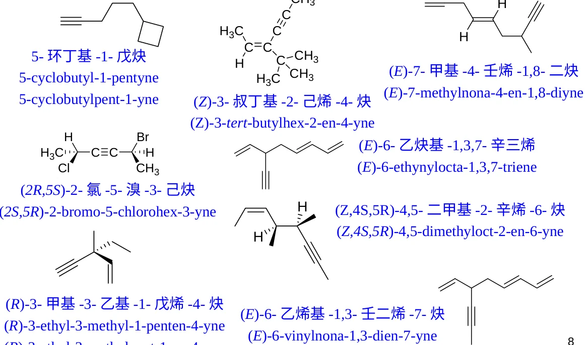
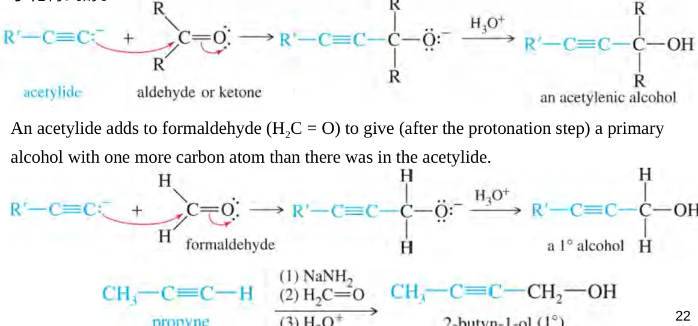

LECTURE 20 · 2026-11-17
炔烃Ⅰ：结构、酸性与制备
三键结构、端炔去质子化、炔基负离子接链与二卤代物消除
20.1 · STRUCTURE AND PHYSICAL PROPERTIES
炔键由什么组成
炔烃含碳碳三键。HC≡CH 是乙炔（ethyne 或 acetylene）。R–C≡CH 是端炔，R–C≡C–R′ 是内炔。开链、仅含一个三键的烃通式为 CnH2n−2，三键贡献两个不饱和度。天然产物中也可出现三键，例如毒芹中的 cicutoxin 含有共轭多炔结构。
每个炔碳的两个 sp 杂化轨道参与 σ 键，键角接近 180°。两对相互垂直的未杂化 p 轨道侧向重叠，组成两套 π 键。乙炔的 C≡C 比典型 C=C 和 C–C 更短。沿三键轴看，两个末端基团共线，炔键本身没有 E/Z 异构。
炔烃整体非极性，水溶性低，可溶于常见非极性有机溶剂。沿同系物增加碳数，色散力通常增强、沸点上升；熔点还受堆积和对称性影响，变化可以不规则。乙炔用于氧乙炔焰和化工原料，丙炔曾用于燃料混合物。乙炔在受压条件下的分解危险解释了专用气瓶为何采用多孔填料和溶剂储存。
来源：幻灯片 2–4、10–14
20.2 · NOMENCLATURE
炔、烯炔与构型描述
先选包含多重键的母链，在符合主官能团要求时尽量纳入最多的双键和三键，再按规则选链和编号。单炔用 -yne，例如 CH3CH2C≡CH 是 but-1-yne（丁-1-炔）。CH3C≡CCH3 是 but-2-yne，俗名二甲基乙炔。多个三键用 -diyne、-triyne，位置逐一标出。
烯炔把 en 写在 yne 前。编号先比较全部多重键位次的最低集合，逐项比较到第一个差异。如果两套位次打平，双键获得较低位次。例 CH2=CH–C≡CH 为 but-1-en-3-yne。若存在醇等优先用作后缀的官能团，则先给主官能团较低位次，再处理多重键。
构型只标在有对应几何或手性的部位。CIP 首先比较直接相连原子的原子序数，同位素按质量数。相同则逐层向外比较，多重键按复制原子处理。双键两侧各取优先级最高的基团，同侧 Z，异侧 E。手性碳最低优先级朝后，1→2→3 顺时针 R，逆时针 S。

来源：幻灯片 5–9
20.3 · TERMINAL ALKYNE ACIDITY
端炔酸性与炔基负离子
端炔脱去的是直接连在 sp 碳上的氢。炔基负离子 R–C≡C− 的孤对位于 sp 轨道，s 成分为 50%，高于 sp2 的约 33% 和 sp3 的 25%。s 成分较大使电子平均更靠近原子核，碳上的负电荷更容易稳定。端炔的 pKa 通常约 25，烯氢约 44，烷烃约 50，量级随体系而变。
R–C≡CH ＋ NH2− ⇌ R–C≡C− ＋ NH3。把酸和碱的共轭酸放在一起比较，平衡偏向较弱酸的一侧。氨的 pKa 约 38，氨基负离子可以脱去端炔氢。水或醇作共轭酸时 pKa 约 16，氢氧根和普通烷氧基难以高效制成炔基负离子。已制得的炔基负离子会被水、醇等质子源淬灭。
来源：幻灯片 15–17
20.4 · ACETYLIDE ALKYLATION
用 SN2 延长碳链
合成内炔时，在目标三键一侧断开 C(sp)–C(sp3) 键，将两段分别写成端炔和卤代烷。炔基负离子背面进攻与 X 相连的碳，形成新的 C–C 键。甲基或不拥挤的伯卤代烷通常最合适。仲卤容易竞争 E2，叔卤在普通条件下主要按消除分析。芳基卤或乙烯基卤的 X 连在 sp2 碳上，也不按这条 SN2 路线接链。
例如 3-癸炔可拆为三键左侧乙基、右侧己基。从乙炔先接乙基得到丁-1-炔，再脱去剩余端氢并接正己基，即得 3-癸炔。先接正己基得到辛-1-炔，再接乙基也可构建同一产物。每次烷基化只接入一个碳片段，第二次接链需要重新生成负离子。4-甲基己-2-炔可拆成对应支链端炔和甲基卤，这样避开最后一步使用仲卤。若题目限定只从乙炔用常规烷基化完成整条路线，另一段仍需要仲卤，故这一路线受限。
来源：幻灯片 18–20、32
20.5 · CARBONYL ADDITION
炔基负离子加成羰基
C=O 的极性使羰基碳可接受亲核进攻。炔基末端碳形成新的 C–C 键，原 π 电子移到氧上，得到烷氧负离子；后处理将 O− 质子化为 OH。甲醛给伯炔醇，其他醛给仲炔醇，酮给叔炔醇。酸性后处理放在成键之后，使其用于质子化产物。

目标若为环戊基–CH(OH)–C≡C–CH2CH3，在羟基碳和炔碳之间断开，得到环戊基甲醛和丁-1-炔。先从乙炔接入乙基，再用丁-1-炔负离子加成该醛。先引入游离 OH 会多出一个容易与强碱或炔基负离子反应的质子，增加后续接链的难度。作业的 2-苯基丁-3-炔-2-醇则可从苯乙酮与乙炔负离子出发。
来源：幻灯片 21–24、32
20.6 · DOUBLE ELIMINATION
二卤代物连续消除和炔键迁移
邻二卤代物的两个 X 在相邻碳上，偕二卤代物的两个 X 在同一碳上。若有合适的 β-H，二者都可经过两次脱卤化氢形成炔键。第一步生成卤代烯烃，第二步需要移走烯基卤的 X 和邻位烯氢，一般需要更强的碱。目标为端炔时，通常用足量 NaNH2：两个当量用于消除，额外的当量可使新生成端炔去质子化，末步再恢复端氢。
强碱下，炔丙位可发生去质子化，生成与累积双键骨架相关的离域负离子。改变重新质子化的位置，炔键可沿链迁移，经丙二烯型中间结构连接不同位置异构体。不同条件下，较稳定的内炔可能富集，强碱体系也可借助端炔盐捕获偏向端位。收率和产物要结合底物、碱和后处理判断。
来源：幻灯片 25–29
20.7 · IDENTIFICATION AND REVIEW
端炔识别与合成自检
烯烃和炔烃都可使溴颜色消失，可先从饱和烃或普通卤代烷中区分含多重键的样品。端炔可形成难溶的银盐或亚铜盐，内炔和普通烯烃缺少对应端炔氢。对卤代烷的另外一组样品，可用生成卤化银的现象比较，碘化银呈黄色，氯化银呈白色，观察时间受底物反应性影响。炔化银和炔化亚铜属于有冲击敏感性的固体，课堂上以定性判据理解。
做酸碱题时先圈潜在酸性质子，再给每个碱写出共轭酸。做合成题时先标出目标的三键两端和所有新增 C–C 键。用乙炔制己-2-炔时可选择甲基与正丙基两段；若目标要求小环内三键，180° 的理想键角与环约束严重冲突，应先判断环张力和产物的可存在性。
来源：幻灯片 30–32
20.8 · SYNTHESIS DECISIONS
在同一道题里比较三条路线
若已知目标碳骨架、只需制造三键，寻找包含目标炔碳的邻二卤或偕二卤前体。若需要加上一段直链，优先用端炔去质子化后接上可被 SN2 进攻的烷基。若新键相邻的位置还需要 OH，则检查是否能让羟基碳来自醛、酮或甲醛。三种方案的检查点分别是可脱去的氢、卤代烷反应碳的位阻，以及羰基碳原有的两个连结基团。
以丁-1-炔分别和 NaNH2、NaOH、NaOEt 比较，先写三种碱对应的共轭酸 NH3、H2O 和 EtOH。只有氨的 pKa 明显高于端炔，因此前者能有效形成炔基盐。若将已经形成的炔基盐加入甲醇，甲醇又会把端氢还给炔碳。一个酸碱平衡有利于生成负离子，另一个有利于恢复端炔，理由来自两组体系各自的共轭酸。
来源：幻灯片 18–24、32
来源：Org. Chem. Lect. 20 (chapter 9-1).ppt（共 32 页）